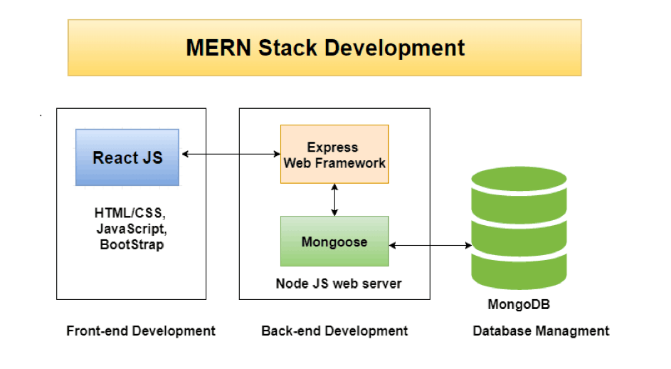

- In this course you learned how to create servers. Thinking about your Capstone project and other real-world scenarios, explain the importance of servers
- Learning how to connect the Frontend (the website the User interacts with) to the Database (where the information is stored) with a Server is critical to becoming a Fullstack Engineer. Now that you’ve seen this critical piece of the Fullstack puzzle, what was hard, difficult, or surprising to you about Server Development, and why?
- Some developers like to focus strictly on Frontend dev, others on Backend dev; and there are those that like to work on the entire Fullstack. Thus far on your journey through this Bryan University Web Development program, you’ve gained quite a bit of experience on the Frontend. Now that you have gained some experience with Backend Development, do you like developing Servers more than creating React apps and working on the Frontend? Don’t worry, you have more time to consider your options, but depending on your objectives and career paths, it’s good to know there are many options available to you, and wise to start considering what it is that you enjoy doing. Discuss your thoughts on this topic.

- Servers play a critical role in a full stack web application. They are the key to handling requests from the client and delivering content to the application. Servers are basically the middle guy connecting the information with the client and act as the core part of an application.
- Surprising to me about Server Development was how easy and convenient the setup process was. You are up and running in little time and there are lots of open-source resources that work with the environment. A simple REST API was a quick, simple implementation and lots of middleware modules are available to perform additional tasks on the request and response.
- I enjoy developing both the server (back-end) and the front-end of applications. I like fully understanding how the core of the application works. Once you have a solid backend, you can basically build any front-end around it. Getting a solid backend up and running then testing it with applications like Postman, allow you to feel confident in the foundation of the app so you can move on to solid front-end development with libraries/frameworks like React and Vue.
I really enjoy developing with React, and I really enjoy Node.js and Express.js. I'm looking forward to integrating the database layer into this environment!